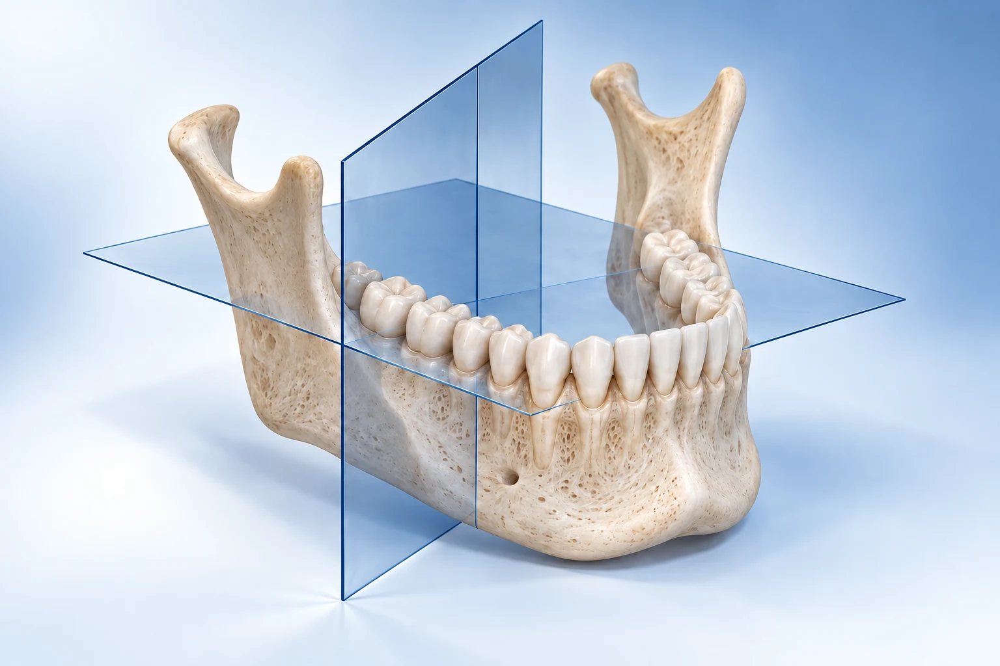
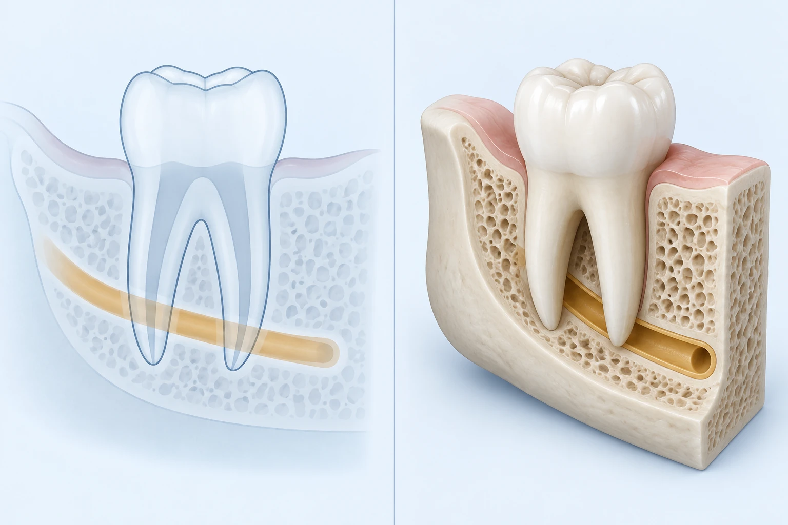
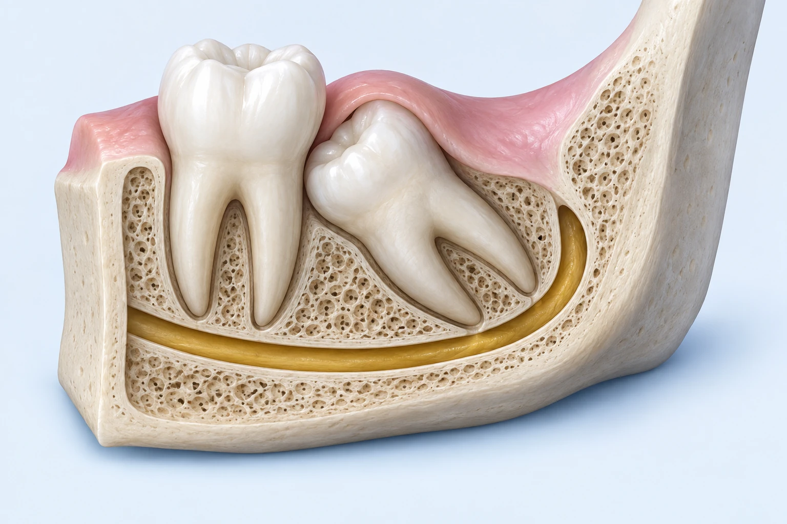
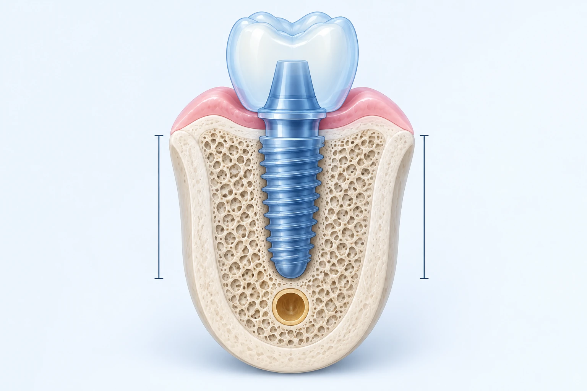
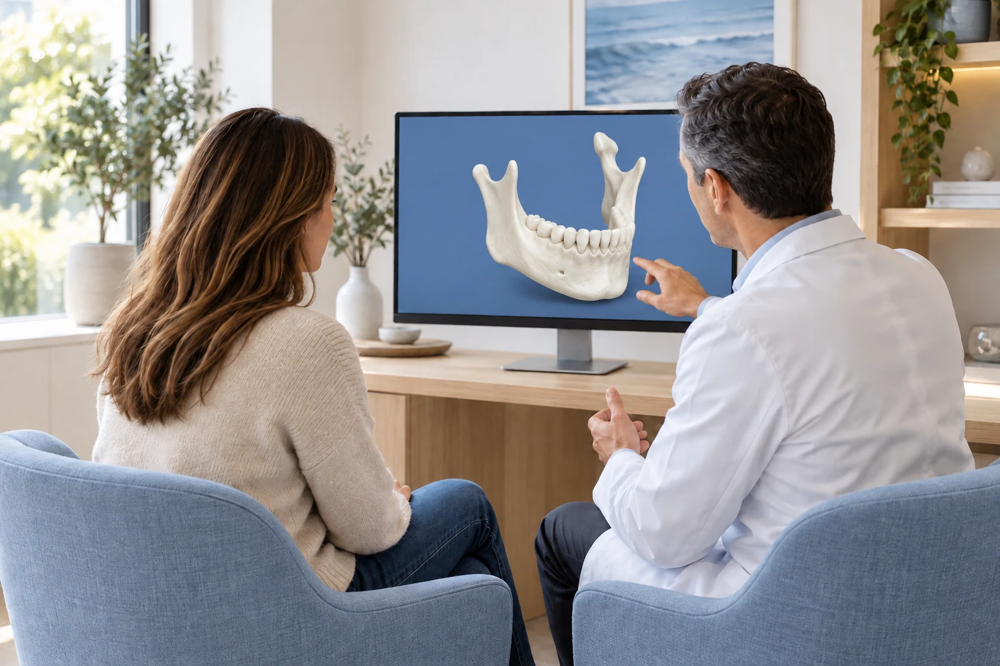

Cone beam computed tomography shows your teeth and jawbone in three dimensions. It helps us understand important anatomical relationships and plan treatment when an examination and two dimensional X-rays do not provide enough information.

Multiple X-ray projections are reconstructed into a digital 3D data set. We can view thin slices in several directions and assess distances and spatial relationships. In German, this examination is called dentale Volumentomographie (DVT).

Enlarge image ↗Left – 2D: The tooth root and ochre-coloured nerve canal overlap in the projection. Their spatial relationship cannot be fully determined from this view alone.
Right – 3D: The simplified cutaway illustrates the additional depth information. In CBCT, we assess this using cross-sectional images in several planes.
AI-generated schematic illustration, not a patient scan. Not to scale; individual distances cannot be inferred.
If the relationship of wisdom tooth roots to the nerve canal is unclear, especially in the lower jaw, CBCT can support surgical planning. It mainly shows the bony canal, rather than the nerve itself.
Assess the position relative to nearby teeth, possible root damage and the access for surgical exposure or attachment of a traction chain. This applies to different teeth, not only canines.
Assess bone height and width, the nerve canal and the maxillary sinus. Where planned, the data can be combined with a surface scan to produce a surgical guide.
For unexplained symptoms or complex cases: investigate additional canals, inflammation around root tips, root resorption or problems after root canal treatment, and plan root-end surgery.

Enlarge image ↗Ivory: teeth and bone. Pink: gum. Ochre: the highlighted bony nerve canal.
The individual relationship between roots and canal matters. CBCT primarily shows the canal’s bony boundaries; it does not show the nerve as the coloured highlight in this illustration.
AI-generated schematic illustration, not a patient scan. Not to scale; individual distances cannot be inferred.

Enlarge image ↗Blue: virtually planned implant and crown. Ivory: available bone. Ochre: cross section of the bony nerve canal.
We assess bone width and height and the relationship to nearby structures. Implant position and necessary distances are planned individually for each treatment.
AI-generated schematic illustration, not a patient scan. Not to scale; individual distances cannot be inferred.
The clinical question comes first: CBCT is not automatic routine imaging before every implant, wisdom tooth procedure or orthodontic treatment. The additional information must be relevant to your care.
In each case, the additional spatial information must be expected to benefit diagnosis or treatment.
Assess the extent of a cyst, an unexplained bone lesion, bone infection or osteonecrosis of the jaw. Suspected tumours may require other imaging and a tissue sample.
Investigate a possible link between teeth and sinus symptoms, locate foreign bodies or assess difficult anatomy before a sinus lift.
Assess tooth roots and surrounding bone after an accident if the findings remain unclear. Selected complex defects around teeth may also benefit from spatial assessment.
Plan selected complex tooth movements, orthodontic mini-screws or jaw corrections. CBCT can show bony joint changes; MRI is usually more suitable for the joint disc.
Before treatment with bisphosphonates or denosumab, it is important to identify dental and jaw infections that need treatment. These medicines are used, for example, for osteoporosis or cancer and can increase the risk of osteonecrosis of the jaw.
The starting point is a dental examination with appropriate X-rays. Existing images, small dental X-rays or a panoramic image may be sufficient. CBCT can add information if a specific question remains unanswered, such as the extent of an infection.
Metal, root fillings and movement can cause image artefacts. Very fine cracks or early changes may remain undetected. CBCT does not automatically explain every cause of pain and cannot guarantee complication-free treatment. Soft tissues, extensive infections or certain tumour questions may require CT, MRI or further investigations.
Both techniques use X-rays to create three dimensional images. CBCT offers advantages for many dental questions. The more suitable method depends on the structure being examined.
| Aspect | Dental CBCT | Medical CT |
|---|---|---|
| Teeth and bone | Can offer very high spatial resolution, especially with small imaging fields. | Also suitable for bone assessment; image quality depends on the protocol. |
| Radiation dose | Often lower than medical CT for a comparable dental question. | Depends on equipment and protocol; modern low-dose CT and CBCT dose ranges can overlap. |
| Soft tissues | Limited assessment; usually without contrast medium. | Better soft tissue assessment, with contrast medium when needed, for example for extensive infections. |
| Availability | Can be integrated into care at our practice; digital images are quickly available. | Usually arranged through a radiology provider; CT scans themselves are also short. |
“Better image quality” in this context means highly detailed images of teeth and bone. It does not mean superiority for every condition. Full interpretation takes additional time with either method.
CBCT uses ionising radiation. A small additional long-term radiation risk cannot be excluded. The expected benefit must outweigh this risk. A small dental X-ray or panoramic image usually involves a lower dose and may already answer the question.
We review existing images and choose the smallest adequate imaging field and an appropriate programme. We take particular care with children and adolescents. Tell us before the scan if you are or could be pregnant. We then consider alternatives, postponement or, if urgently needed, an individually justified examination.
In German dental care, CBCT is generally charged as an individually paid private service for patients with statutory insurance. Reimbursement by private insurance, civil service benefits or supplementary insurance depends on the policy and medical justification. A referral does not guarantee payment.

Immediately after CBCT alone: eating, drinking and driving are normally possible. No radiation remains in your body. You do not usually need someone to collect you for the scan alone.
Yes. Please provide the original digital image data and report where possible. We check whether their age, quality and imaging field are suitable. A repeat scan requires a new justification.
We discuss alternatives and any remaining uncertainty. The planned treatment may need to be modified or postponed.
Questions: 06151 786540 · info@mkg-im-carree.de. Current online CBCT information.
For problems after an additional procedure outside practice hours: +49 151 10437450; if unavailable, dental emergency service 01805 60 70 11. Call 112 for a life-threatening emergency, breathing difficulty, severe difficulty swallowing or rapidly increasing swelling of the floor of the mouth, neck or tongue.
Clinical sources: AWMF 083-005, S2k Dentale digitale Volumentomographie (12/2022, valid until 12/2027); FDA, Dental CBCT; ACR/RSNA, Dental Cone Beam CT; AAOMS, MRONJ Position Paper (2022); § 120 StrlSchV. Accessed 24 September 2026. This information supports your individual consultation.